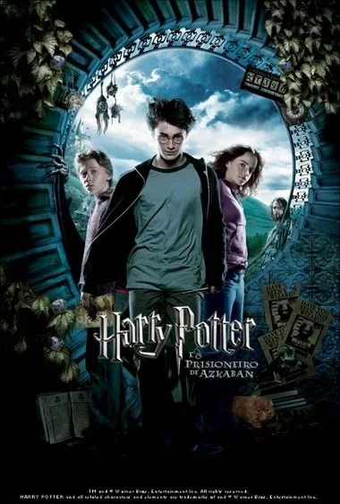
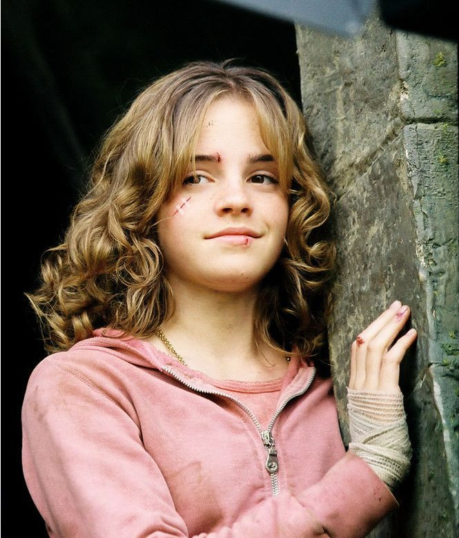
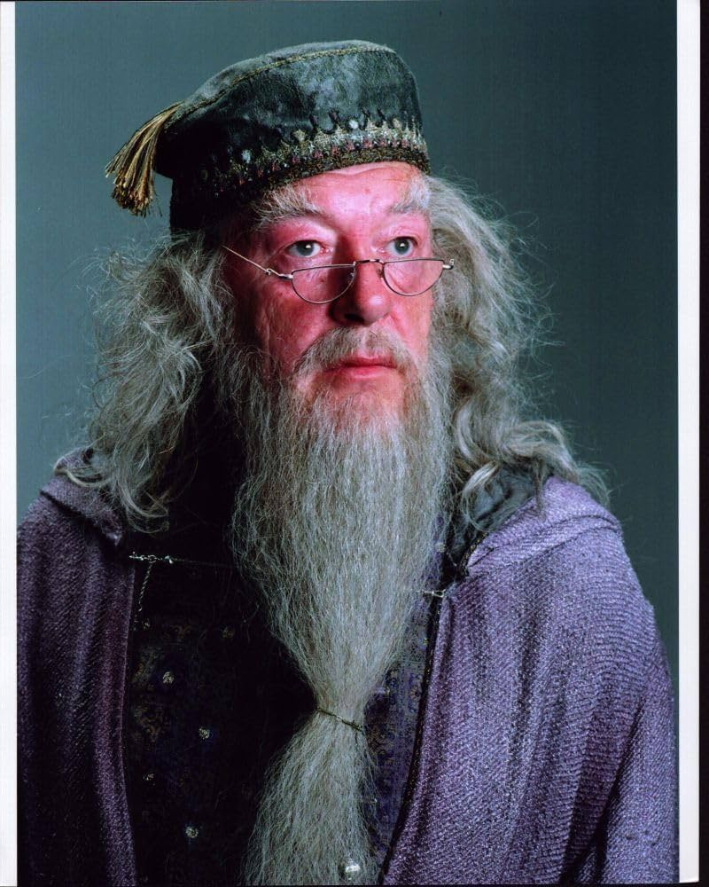
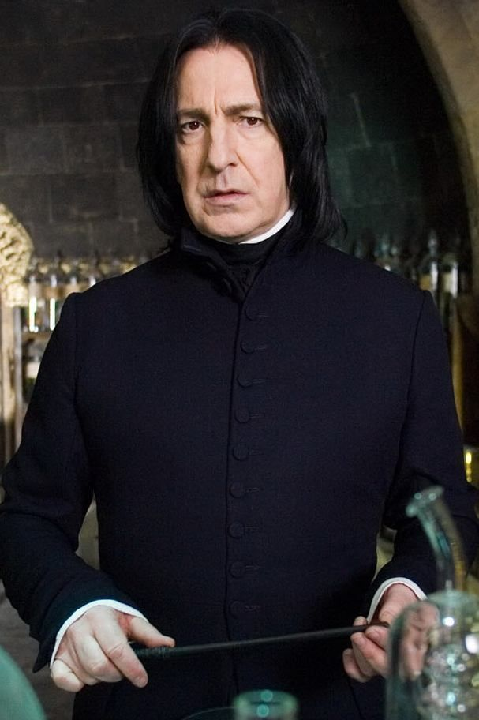

Harry Potter
Um jovem bruxo que retorna a Hogwarts para seu terceiro ano.
Hermione Granger
Melhor amiga de Harry e uma das alunas mais inteligentes de Hogwarts.

Ron Weasley
Melhor amigo de Harry, que está sempre ao lado dele nas aventuras.

Sirius Black
Um perigoso prisioneiro que fugiu de Azkaban e está sendo procurado.

Albus Dumbledore
Diretor de Hogwarts, responsável por manter a segurança dos alunos.

Remus Lupin
Novo professor de Defesa Contra as Artes das Trevas em Hogwarts.

Tia Guida Dursley
Parente de Harry que passa um tempo com ele durante as férias.

Severo Snape
Professor de Poções de Hogwarts, conhecido por sua personalidade rigorosa.

Uma curiosidade bem legal sobre Harry Potter e o Prisioneiro de Azkaban:
O diretor Alfonso Cuarón pediu que os atores principais escrevessem uma redação sobre seus personagens.
Emma Watson, que interpretava Hermione, entregou várias páginas. Daniel Radcliffe, que interpretava Harry, escreveu apenas uma página.
Já Rupert Grint, que interpretava Rony, não entregou nada, porque disse que Rony provavelmente também não faria a tarefa.
leticia.guarizo@portalsesisp.org.br